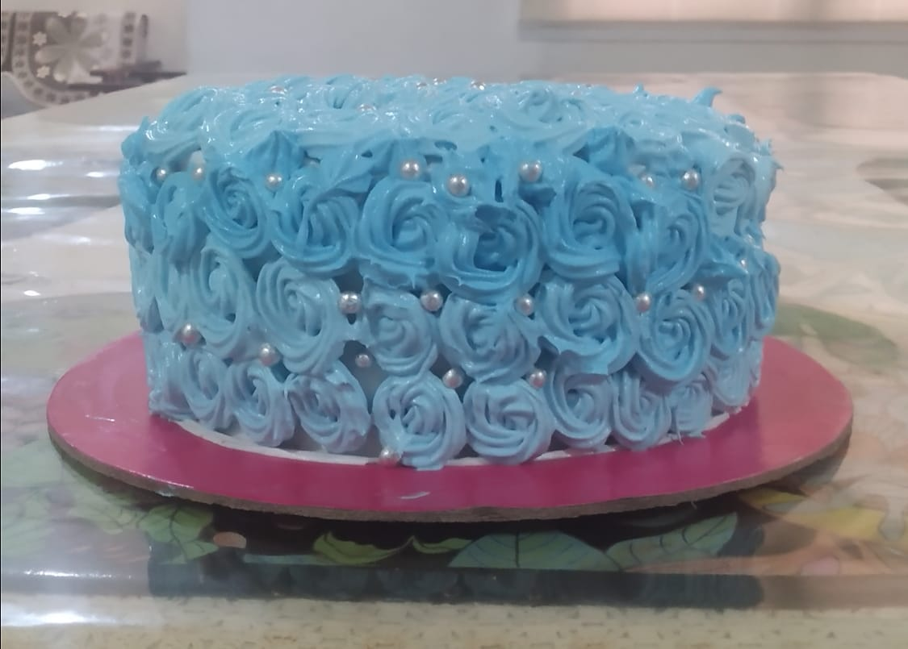
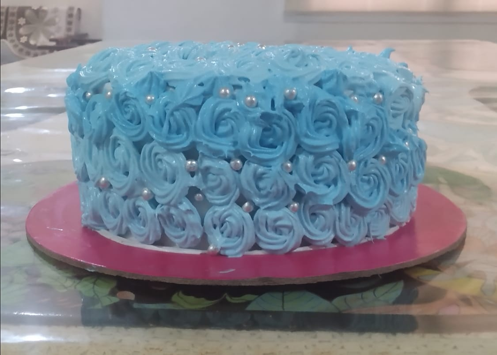

My hobby is baking.I love baking cakes,cupcakes,cookies etc.. Baking is fun and I bake when i get free time or on birthdays. I got inspired in baking when i saw a show called "Kids Baking Championship". I started baking when i was 9 years old. Now,I am pretty good at baking and everyone loves my cakes.

 
